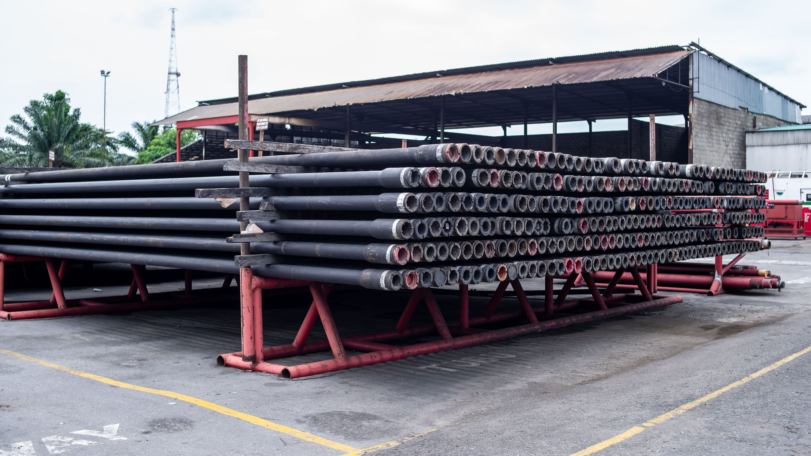
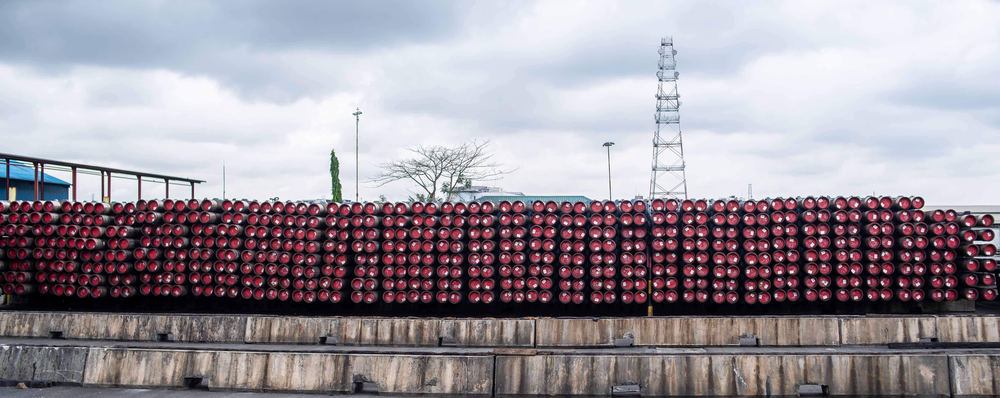

Oilfield projects depend on timely access to specialised equipment, tubulars and intervention tools.
In the oil and gas industry, equipment availability can determine whether an operation proceeds as planned or becomes an expensive delay.
A well that is not drilled on schedule, a maintenance operation that is delayed or a missing piece of critical equipment can result in significant financial setbacks. The smooth flow of oilfield operations depends on a reliable supply chain and timely access to the correct tools.
For operators, supply-chain challenges are more than inconveniences. They can threaten efficiency, project timelines and overall cost. A routine well intervention may be halted because an essential downhole tool is unavailable, while a drilling programme may be delayed by late tubular delivery.
The question is no longer whether supply-chain disruptions will occur, but how prepared operators are to respond when they do.
The growing complexity of oilfield supply chains
The oilfield supply chain is intricate and global. Equipment used in well construction, maintenance and intervention is often manufactured across several continents. Drill pipe may originate in Asia, casing accessories in Europe and control systems in North America before reaching an operating location in West Africa or the Middle East.
With so many moving parts, even a small disruption can create a wider operational impact. Geopolitical tensions, economic instability, trade restrictions and raw-material shortages can create bottlenecks. Rising shipping costs, port congestion and workforce shortages can further extend lead times and increase the cost of essential equipment.
Longer lead times
International sourcing delays can disrupt project schedules and planned maintenance windows.
Higher costs
Urgent sourcing, logistics constraints and limited availability can increase procurement expenditure.
Operational risk
Teams may be forced to improvise or use less suitable equipment when critical tools are unavailable.
Equipment shortages
Limited stock can delay drilling, intervention and maintenance activities.
The real impact on operations
A disruption in oilfield-equipment availability can have serious operational consequences. Drilling teams may need to revise well plans because specific tubular sizes are unavailable. Intervention crews may also have to rely on older tools while newer and more efficient options remain delayed in transit.
The effect goes beyond schedule delay. When companies are forced to improvise, operational efficiency can decline, safety margins may shrink and unplanned costs can increase.
Many operators are therefore taking a more strategic approach. Some are diversifying their supplier base to avoid over-reliance on one region or manufacturer. Others are investing in local manufacturing and service capability to reduce dependency on imports.
Rentals provide flexibility when procurement is delayed
Equipment rental offers operators immediate access to critical tools without the uncertainty of extended procurement lead times. This can be particularly valuable for downhole tools, fishing tools and tubulars required for time-sensitive operations.
At AOS Orwell, we have seen operators prioritise rental solutions to keep projects moving during periods of supply-chain disruption. Rentals can reduce waiting time, provide cost-effective flexibility and ensure that the required equipment is available when needed.


Building a more resilient sourcing strategy
Supply-chain disruption will remain a possibility in oilfield operations. Companies that anticipate risk, secure reliable alternatives and make timely procurement decisions will be better positioned to protect project schedules and maintain competitiveness.
In an industry where time directly affects cost, the ability to respond quickly can mean the difference between a successful operation and a costly delay.
AOS Orwell provides high-performance tubulars, downhole tools and fishing tools for rental, helping operators secure the equipment they require when they require it.
Secure reliable oilfield equipment without unnecessary delays
Speak with AOS Orwell about tubulars, downhole tools, fishing tools and flexible rental support for your next operation.
Discuss your requirement arrow_forward